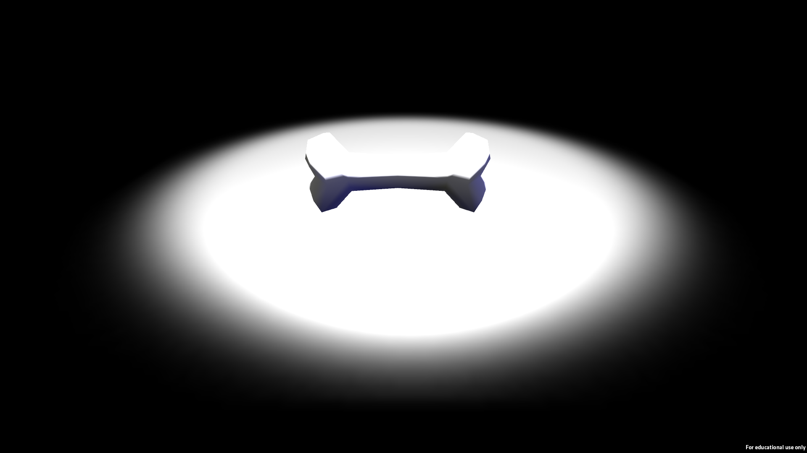
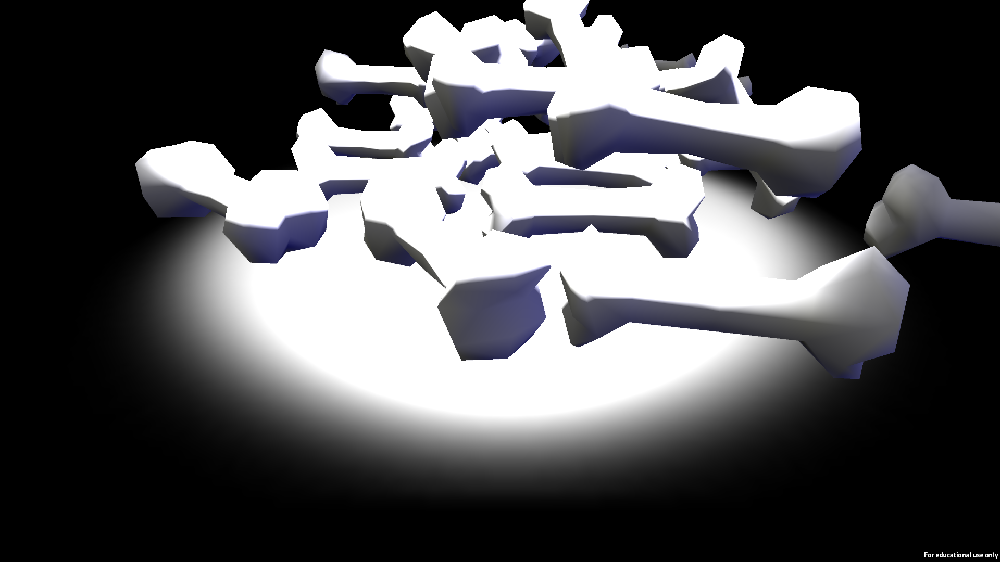

I was very unhappy with my original portfolio website, so I re-designed it from the ground up using what I'd learned since making it. Updated colors, new projects, and fancy transitions have all been added, as well as a spiffy multi-page layout that lets me share projects like these without cluttering up my main page.
After watching a friend play Dota 2, I was struck with inspiration. I had realized that despite there being tons of bones on the game's map, you couldn't interact with any of them! As a response, and as a pastiche of "meaningless" video-game interactions, I made Bone Game: a game that lets you touch bones. As many as you want.
 Once again struck with inspiration after watching a friend play Dark Souls, I learned how to mod the game so I could swap out the "Toxic" status effect sound with the song Toxic by Britney Spears. An interesting fact about this project is that there already exists a modding tool for swapping sounds in the game's files, but I learned how to swap sounds (and add completely new ones) manually using FMOD Designer and the game's fsb and fdp files for sound editing. I also learned about Dark Souls' EMEVD files and how to add, remove, or modify events in the game such as applying or creating status effects and playing sounds. You can dowload the mod here!